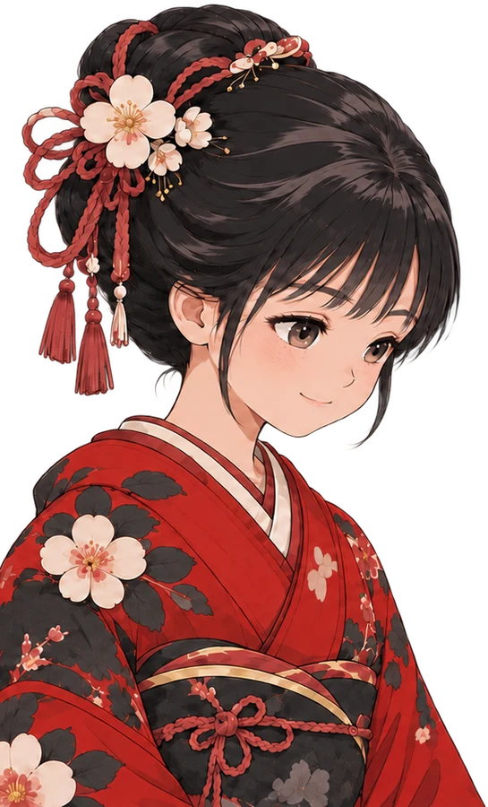
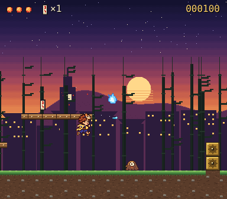

みかげ とうま
御影灯真
帝都の北外れにある御影人形工房の若き人形職人。彼の作る自律人形は、街で「あれは、ほんとうに、生きておる」と囁かれている。安倍晴明の血を引く御影家の陰陽師でもあり、一族の誰も成し得なかった「十の宝具すべてを扱う」才を持つ。それでも本人にとっては、力よりも人形作りのほうが楽しい。自分の作った人形を、わが子のように大切にしている。
機巧の人形に、神が宿る。
大正 × 機巧 × 陰陽道
第二部 イメージムービー
蒸気と歯車が街を動かす、
もうひとつの大正。
帝都では、自律して働く機巧人形が人々の暮らしに溶け込んでいた。荷を運び、店に立ち、夕暮れの通りを行き交う傀儡たち。
だがその陰で、古より封じられてきたものが目を覚まし始める。神々の力を宿す宝具、陰陽の術、そして千年を超えて受け継がれた因縁——。
人形とともに生きる青年・灯真は、帝都を揺るがす事件の渦中へと踏み込んでいく。
蒸気自動車が白い息を吐いて石畳を走り、瓦斯灯の下を人々が行き交う。煉瓦の銀行と古い店が肩を並べる、和洋折衷の街。
身体に納めた式神札の命令どおりに動く、蒸気仕掛けの人形たち。煙草を売り、給仕をし、辻でからくり芝居を演じる。
機械文明の陰で、陰陽師は今も妖を祓い続けている。「謹請」の詞とともに、宝具は神仏の力を解き放つ。
帝都の北外れにある御影人形工房の若き人形職人。彼の作る自律人形は、街で「あれは、ほんとうに、生きておる」と囁かれている。安倍晴明の血を引く御影家の陰陽師でもあり、一族の誰も成し得なかった「十の宝具すべてを扱う」才を持つ。それでも本人にとっては、力よりも人形作りのほうが楽しい。自分の作った人形を、わが子のように大切にしている。

灯真が作った自律人形に宿る付喪神。正体は御影家に代々伝わる簪で、緋色の振袖をまとった幼い少女の姿をしている。主を「灯真様」と慕い、御影の宝物庫とつながる力で宝具を灯真のもとへ呼び寄せる。風を操る術と、簪や扇を使って戦う。舞も得意とする。
鷲尾侯爵家にあった茶釜の付喪神。狸の面に白装束の童子の姿で、一人称は「おら」。本当の銘は「文福」だが、幼い主の宗介が「まるまるして福が来そうだ」と付けた名を名乗っている。幻術でいたずらを仕掛けるにぎやかな性格だが、心根はとても優しい。ある事件をきっかけに、御影家で暮らすことになる。
灯真の祖父で、江戸末期生まれの老陰陽師。六十を過ぎても肩幅は厚く、徳利を手放さない。口は悪く圧も強いが、孫の才を誰よりも理解している。素手でも、腕に覚えのある男たちを寄せつけない。
灯真の幼馴染で、古物商「雨月堂」の若女将。雨宮家も御影家と同じく安倍晴明の宝具を預かる分家で、詩乃舞も宝弓・宝箭を操る陰陽師だ。帝都でも指折りの商魂の持ち主で、何でも入る「よろず巾着」を量産して売れないかと目論んでいる。
千手の宝具は、安倍晴明が千手観音から賜ったとされる宝具。
五芒星が刻まれた黒い木刀。灯真が呼びかけると、皮が剥がれるように光り輝く刀身が現れ、焔を噴き上げる。その焔は、喰らった魂を引き剥がし、怨を祓い、魔を滅する。
詩乃舞が使う、飴色に光る一対の弓と矢。番えると白い雷をまとい、放った矢は数十の光に分かれて禍の源を穿つ。
機械文明が台頭し、人々の意識から薄れつつあっても、妖は今も帝都の闇に潜んでいる。
長い年月を経て、物に宿った精霊のような存在。本来は、宿った物の置かれた場所から動くことができない。灯真の人形に魂を移せば、自らの足で歩けるようになる。
古の時代、大和朝廷にすら従わなかった者たちの怨念が妖と化した大妖怪。八つの赤い眼をもつ虎のような面に、黒い剛毛の蜘蛛の体をしている。かつて安倍晴明に地の底へ封じられたが、千年の時を経て何者かに封印を解かれ、晴明の血を引く御影家へ牙を剥く。

壱の巻「裏山の泥田坊」では、術の稽古として泥田坊を祓う。弐の巻「蒸気の工場街」では、宝条吉利の術で暴れ出したからくり人形に立ち向かう。壱の巻をクリアすると弐の巻が遊べる。
遊んでみる ▶本編はカクヨムにて連載中
カクヨムで読む